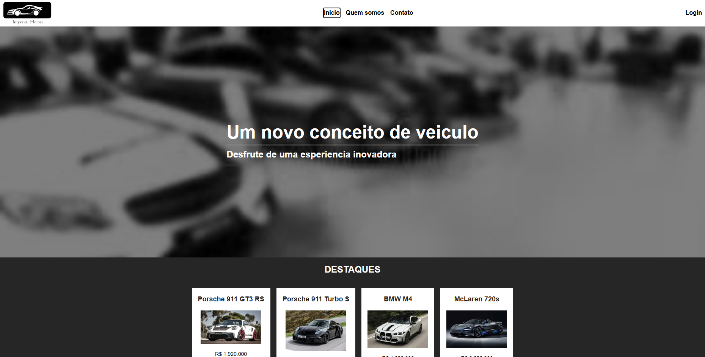
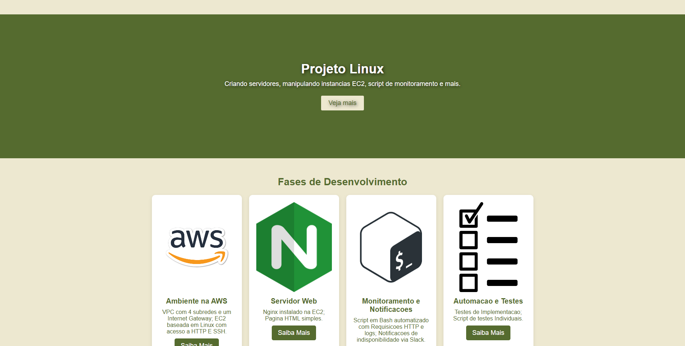
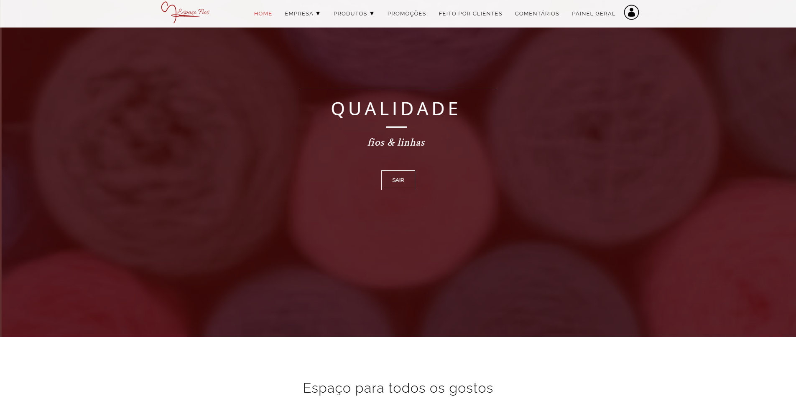

Sobre Mim
Sou estudante de Análise e Desenvolvimento de Sistemas e estagiário na área de Cloud & DevSecOps. No momento, estou focado em expandir meus conhecimentos em desenvolvimento web e Linux. Meu principal objetivo é integrar Cloud, automação e segurança para criar infraestruturas escaláveis e seguras. Além disso, busco evoluir no desenvolvimento de soluções eficientes e eficazes, entregando resultados de alta qualidade.
Minhas Tecnologias
 |
 |
 |
|
 |
 |
 |
 |
Principais Projetos
Projeto Scripts
Projeto realizado com Next.js, Tailwind CSS e TypeScript. Foi utilizado o banco de dados SQLite e interação com Sequelize.
Projeto Linux
Projeto feito na AWS, com um servidor Nginx em uma instancia EC2. Foi desenvolvido um script de monitoramento de logs do Nginx e notificaçoes via WebHook do Slack.
Projeto TCC
Projeto desenvolvido com HTML, CSS, Javascript e PHP. Foi utilizado o banco de dados MySQL e interação com o banco de dados.